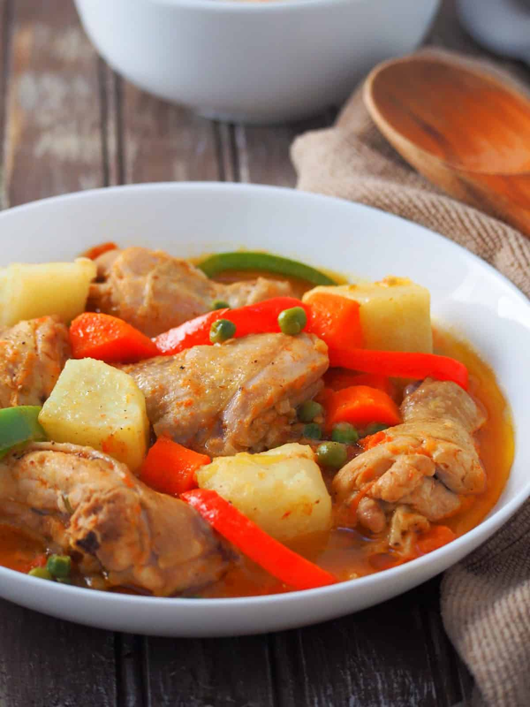

Chicken Afritada

Description
Chicken afritada is a classic Filipino stew with a tomato sauce base and potatoes and carrots. This dish typically populates households during festivals due to its ease of cooking while still being delicious.
Ingredients
- 1 kg chicken cutlets
- 1 piece onion, diced
- 1 bulb garlic, diced
- 3 potatoes, peeled and cubed
- 3 carrots, peeled and cubed
- 1 can peas, drained
- 2 red bell pepper, sliced into strips
- 2 tablespoons fish sauce
- 1 pack tomato sauce
- salt to taste
- 2 tablespoons oil
- (optional) two packs soda crackers, crushed
Steps
- Heat oil in a pot
- Saute garlic and onion until slightly browned
- Add chicken cutlets until lightly browned
- Pour tomato sauce, add bell pepper, and add three cups water. Cover and let simmer for 40 minutes
- Add potatoes, carrots, and peas. Let simmer again until potatoes are soft
- Add fish sauce and optionally, crushed soda crackers for a thicker soup
- Salt to taste
- Serve with freshly cooked rice